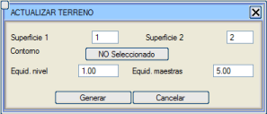
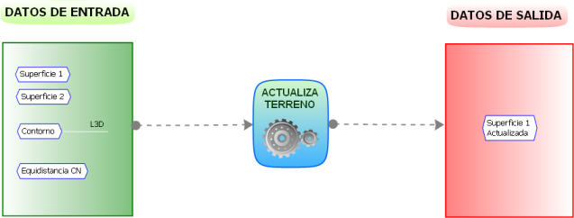
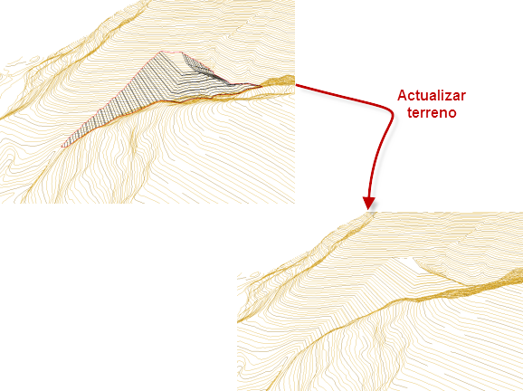

| |
|
ARAZİYİ GÜNCELLE
|
Bu seçenek ile kullanıcıdan 2 adet yüzey, bir kontur veya kapalı alan (adacıklar da içerebilen) ve tesviye eğrileri ile ana eğriler için eğri aralıkları istenir. Bunun ardından [Oluştur] butonuna basıldığında, Yüzey 2 olarak belirtilen yüzeyin eşyükselti eğrileri kontur içinde hesaplanacak ve Yüzey 1 olarak belirtilen yüzeyin eşyükselti eğrilerine dahil edilecektir. 

|